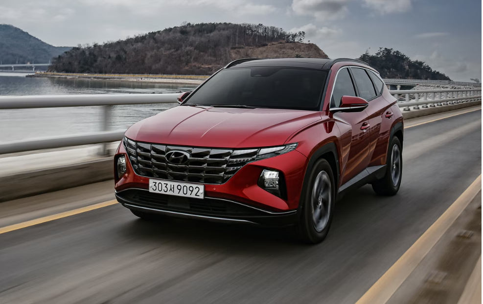

Hyundai Tucson არის კომპაქტური კროსოვერი SUV (C-სეგმენტი), რომელიც წარმოებულია სამხრეთ კორეული მწარმოებლის Hyundai-ს მიერ 2004 წლიდან. ბრენდის ხაზში, Tucson მდებარეობს Santa Fe-ს ქვემოთ და Kona-სა და Creta-ს ზემოთ. მას ეწოდა არიზონას შტატის ქალაქ ტუსონის სახელი. მეორე თაობის მოდელი გაიყიდა როგორც Hyundai ix35 რამდენიმე ბაზარზე, მათ შორის ევროპაში, ავსტრალიასა და ჩინეთში, სანამ მესამე თაობის ტუსონს დაუბრუნდებოდა.
Tucson არის ყველაზე გაყიდვადი Hyundai SUV მოდელი, 2004 წლიდან გამოშვების დღიდან 7 მილიონზე მეტი ერთეული გაიყიდა მსოფლიოში. აქედან 1.4 მილიონი ერთეული გაიყიდა ევროპაში.